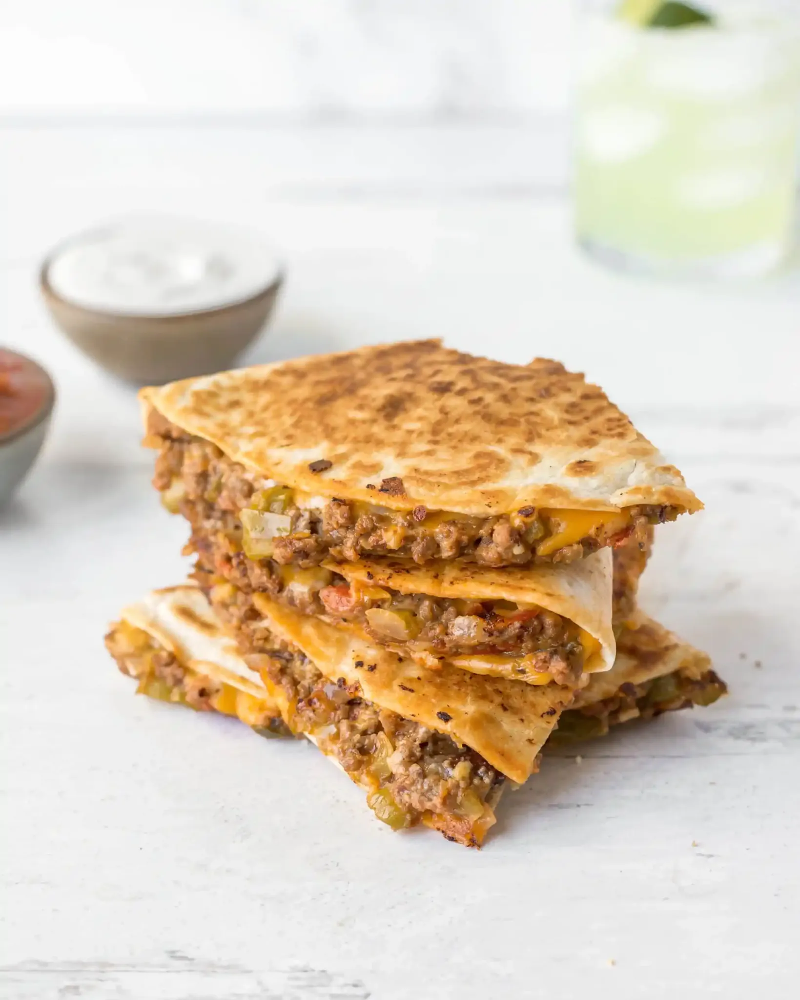

x
Quesadillas
Cheesy Ground Beef Quesadillas for Two

Our absolutely favorite cheesy ground beef quesadillas recipe. These come together in about 30 minutes, and
makes 2-3 servings.
Fresh ingredients (like vegetables, garlic, and lime juice), taco seasoning, some refried beans (for texture!),
and gooey cheese are BIG flavor components!
They're everything you need for a delicious quesadilla, and nothing more. (Trust me, I'm a huge fan of
quesadillas.)
These are a perfect Taco Tuesday idea if you're not feeling tacos,
and they're also the perfect meal for a quick, easy, and super flavorful dinner!
Ingredients:
- Unsalted Butter
- Fresh Tomato (Roma/Plum)
- White Onion
- Bell Pepper (Any color! I love green or red, personally.)
- Fresh Garlic
- Kosher Salt & Freshly Cracked Pepper
- Ground Beef (An 80/20 blend or lean ground beef works!)
- Taco Seasoning
- Refried Beans
- Fresh Lime Juice
- 8″ Flour Tortillas
- Shredded Cheddar & Shredded Jack Cheese (such as Colby Jack, Monterey Jack, or Pepper Jack)
- Blend the shredded cheese together if using more than one variety.
- Melt butter in a large skillet over medium heat. Add tomatoes, bell pepper, onion, and garlic with a pinch
of salt and pepper. Cook for 5-7 minutes until slightly tender.
- Add the ground beef and taco seasoning to the skillet. Use a wooden spoon to break the beef into smaller
pieces and mix it into the veggies. Brown the ground beef (this takes about 5 minutes), continuing to break
it into smaller pieces as it browns.
- Stir in the refried beans. Transfer the meat mixture to a large bowl and cover with foil to keep warm.
- Place a tortilla in the now empty skillet. Sprinkle half a cup of shredded cheese across the top of the
entire tortilla. Spoon half a cup of the meat mixture onto one half of the tortilla. Spread it across the
cheese over the entire half of the tortilla.
- Once the cheese is melted on the other half of the tortilla, carefully fold that half onto the beef mixture.
Use a spatula to gently press down on top of the folded tortilla.
Cook for about two minutes until the
bottom is golden brown and crispy.
- Carefully flip the tortilla. Cook for another two minutes until the bottom side is also golden brown and
crispy. Transfer the quesadilla to a cutting board and allow it to cool for about 30 seconds. Use a pizza
cutter or sharp knife to cut it in half.
- Repeat with remaining two tortillas, cheese, and meat mixture.